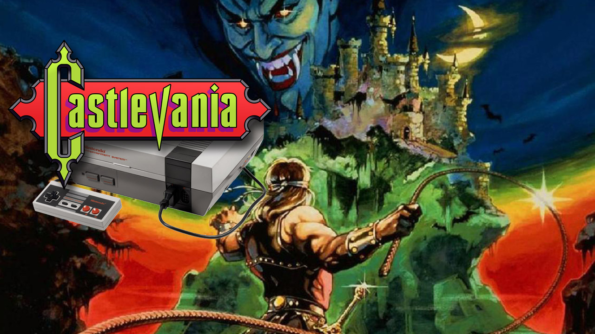
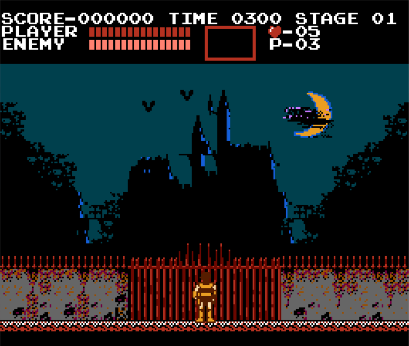
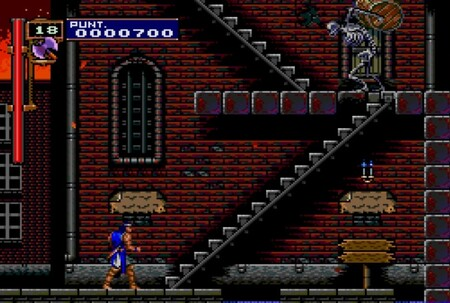
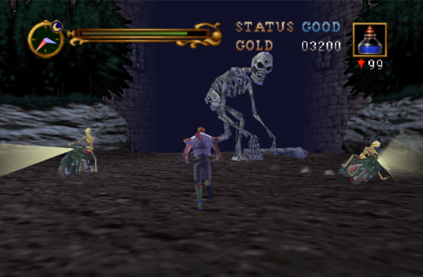

¿Que Es Castlevania?
Castlevania (キャッスルヴァニア) es una serie de videojuegos, creada y desarrollada por Konami. Esta serie debutó en Japón con la primera versión de Demon Castle Dracula (悪魔城ドラキュラ Akumajō Dracula) para las plataformas Famicom Disk System (FDS) y tres meses después para MSX 2 en 1986. Aun cuando la versión de MSX 2 (que fue conocida en Europa como Vampire Killer) fue la primera versión sacada a la venta fuera de Japón, esta no fue la versión original. En América no se conoció hasta que la versión FDS fue reprogramada en formato de cartucho para el Nintendo en 1987, bajo el título de Castlevania. Esto ha llevado muchas veces a la confusion sobre en que plataforma salió primero, estando claro que fue en Famicom Disk System. Pero a pesar de todo, el primer juego de la saga es el arcade Haunted Castle (1986). Además, se produjeron dos juegos en los años 80 para el formato portátil Tiger, llamados "Castlevania II: Simon's Quest" y "Symphony of the Night", aunque estos no son considerados como parte de la serie.

Evolucion De La Saga
La mecánica de los juegos son muy similares (y en ocasiones muy simples) en la mayoría de las primeras versiones. Estos juegos son la clásica aventura de plataformas en las que el jugador toma el rol de un guerrero de la familia Belmont armado con un látigo y se aventura dentro de Castlevania (el castillo del Conde Drácula) y pelea contra diferentes monstruos y fantasmas. En la mayoría de los juegos, el arma principal es un látigo (o Matavampiros, como se nombra en la versión americana). Otras armas disponibles son, una cruz, generalmente azul, por que se considera sagrada, que regresa al jugador que la lanza(en Symphony of the Night, al usar la cruz con Alucard, se invocan, varias cruces gigantes alrededor de él) dagas (o cuchillos o espadas), hachas y botellas con agua bendita, también llamadas popularmente "dinamita".

La apariencia general de los personajes también ha cambiado desde la primera versión. En los primeros juegos, los personajes principales son guerreros con armaduras de cuero y otros tipos de trajes de batalla. Así como nuevos juegos de Castlevania comenzaron a emerger, la vestimenta de los héroes cambió para ser más elegante, reflejando una evolución de los juegos, incluso en aspectos como el diseño de vestuario. Este look moderno adoptado por los personajes de los juegos más recientes se puede decir que fue introducido por Castlevania: Symphony of the Night, el primer juego que utilizó diseños de la pintora japonesa Ayami Kojima. Otro detalle notable es el estilo de diseño tipo anime, que ahora esta presente en la mayor parte de la serie, pero que se puede percibir mas en juegos como Dracula X: Rondo of Blood, y en títulos posteriores.

Con los nuevos juegos, se agregan nuevos elementos, que comenzaron a tomar un tono más relacionado al RPG, por primera vez visto en Castlevania II: Simon's Quest. La cumbre de la serie llegó con Castlevania: Symphony of the Night para Sega Saturn y PlayStation. El juego tomó la apariencia y estilo de juego de Super Metroid y añadió elementos RPG. Se considera a este como el mejor juego de la serie, junto con Dracula X: Rondo of Blood, y Castlevania: Dawn of Sorrow para Nintendo DS. Los tres juegos programados para el Game Boy Advance siguen este tipo de esquema, siendo el mejor de ellos Castlevania: Aria of Sorrow al igual que los parecidos para Nintendo DS Dawn of Sorrow y Portrait of Ruin.

Los primeros juegos que utilizaron gráficas en 3D fueron para la consola Nintendo 64 pero los fanáticos consideran que estos no son sucesores dignos de los juegos tradicionales, aún cuando son juegos excelentes. Por otra parte, otro juego de Castlevania en 3D está mejor considerado. Se titula Castlevania: Lament of Innocence y fue hecho para el sistema PlayStation 2, ya que tiene un estilo de juego similar a Devil May Cry de la compañía Capcom. Otro juego en 3D de Castlevania que nunca salió a la venta es el llamado: "Castlevania Resurrection" para el Dreamcast, el cual iba a ser protagonizado por Sonia Belmont (la misma de Castlevania Legends para Game Boy) y por Victor Belmont. Otros juegos cancelados en la serie son el titulado simplemente "Castlevania" para la consola 32X y "Castlevania: Symphony of the Night" para la portátil Game.Com. Konami lanzó a fines del 2005 en América y Japón y a comienzos del 2006 "Castlevania: Curse of Darkness" para PlayStation 2 y XBOX. El juego es muy similar al "Lament of Innocence", solo que encarnaremos el papel de un nuevo personaje llamado Héctor. También lanzó en una fecha muy cercana el "Castlevania: Dawn of Sorrow"(la secuela del "Castlevania: Aria of Sorrow") para Nintendo DS. En el se implementa el uso de la pantalla táctil para romper rocas que impiden nuestro paso gracias a una habilidad especial, y para sellar a los bosses con un círculo mágico. Este Castlevania sigue las aventuras del joven Soma Cruz en un futuro muy cercano. El juego para la Nintendo DS que prosiguió fue "Castlevania: Portrait of Ruin", secuela de "Castlevania: Bloodlines.